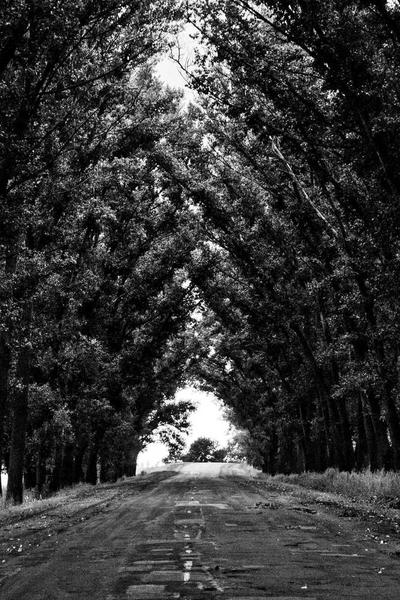
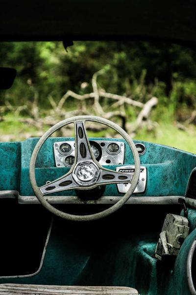
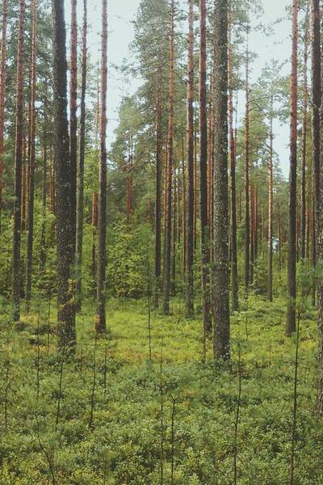
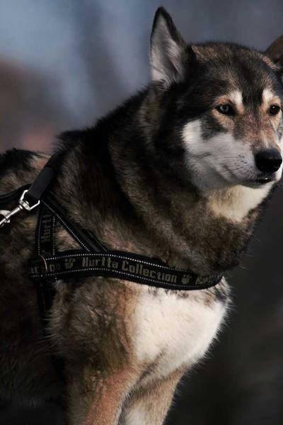
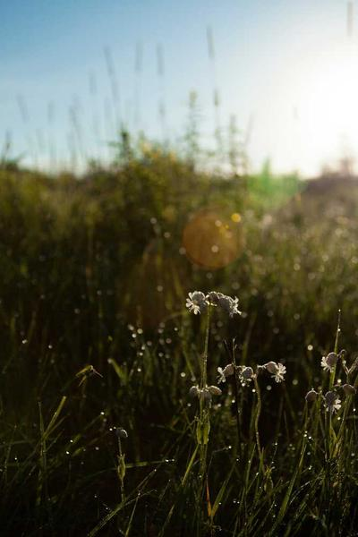

一套「深色为主、信息优先」的观影界面语言。把用户的注意力全部留给内容：海报、剧名、进度， 其余元素一律退到背景里。目标是让「打开 → 找到 → 接着看」这条路径在任何一屏都不超过两次点击。
参考 Netflix 的内容主导、爱奇艺的运营分层、Disney+ 的品牌克制、豆瓣的信息诚实，收敛成四条硬规则。
海报≥70% 的视觉面积。除海报、片名、评分、进度外，其他元素用低对比灰，不抢视线。深色底让海报边缘自然消失，画面更连续。
首页负责「发现 + 接着看」，片匣负责「我的进度」，搜索负责「精准命中」。每个屏幕只有一个主 CTA，且都落在拇指区。
点海报永远进详情，绝不直接起播；返回永远回到上一屏，不退出。这是追剧类 App 最容易让人卸载的两个坑。
加载给骨架屏而非转圈，多源聚合给「5 个源 / 12 条」的实时计数，空态必须给一条出路（去添加源 / 换关键词）。
深空墨作为唯一底色，品牌蓝只承担「可交互」，星金只承担「值得注意」（评分 / 进度 / 当前集）。
深色界面禁止用投影表达层级（在纯黑上投影不可见）。改用「底色 → 卡片 → 浮层」三级明度：#0A0E14 → #141A24 → #19212C，每级差 4~6%，肉眼刚好分得清。
评分是金色数字 + 星形图标；「新集」是红色块 + 文字。任何颜色都配形状或文字，色盲用户同样可读。
底 #F7F5F0 → 卡片 #FFFFFF → 浮层 #EDEAE3；文字 #191C20 / #5E6066；品牌蓝降到 #1D4E89 保证白底对比 5.9:1。结构完全一致，只换 token。
系统字体（鸿蒙 / 思源黑体 / Roboto），六个层级，字重只用 400 / 600 / 800 三档，避免粗细混乱。
中文加字距会散架。只有英文小标签（如 DISCOVER）和全大写才有 0.12~0.16em 的字距。数字用等宽数字（tabular），进度时间不会跳动。
片名一律 2 行截断，元信息 1 行截断。长片名不允许换行挤压海报（海报是 2:3 固定比例，不能被文字高度带跑）。
4pt 网格，页面左右 20 留白（比常见的 16 更透气），所有可点区域不小于 44×44。
卡片内 12，卡片间 11（网格用奇数间距，比 12 更紧凑）、分区间 18、页面边 20。
角标 6，Chip 8，输入框与按钮 12，卡片 14，底部抽屉 22，屏幕 42。圆角随尺寸递增，视觉上才「同心」。
按下 120ms、面板与页面 220ms（ease-out）、轮播 5s 自动切换。播放器控件 3s 无操作淡出。
图标按钮 36dp 视觉 + 48dp 热区；底部 Tab 高 66；选集格子 40 高、间距 8，误触率最低。
只定义 9 个基础组件，整套界面由此拼装，保证一致性。
主按钮高度 44~46，圆角 12。深底上只用两种填充：品牌蓝（主行动）与 8% 白（次行动）。
一级切换用分段控件（互斥、2~3 项）；标签用 Chip（可多项）。不要用 Tab 下划线，太细，深底上不可见。
播放器内 2.5dp；卡片封面上的续播条 2.5dp 贴底边，不遮挡画面主体。已播=星金，未播=白 14%。

8.1评分只在右上（与视线落点一致）；集数角标左下，红色仅用于「有新集」。封面加 0.88 饱和度、1.02 对比统一色调。
缩略图 112×63（16:9），双行文字，右侧箭头暗示「继续」。列表比网格更适合展示进度，因为可以一行放下进度条和剩余时长。
加载一律骨架屏，不用转圈：转圈让人以为卡住。空态必须配一个按钮，不能只有一行灰字。
9 个关键界面，覆盖现有全部功能：豆瓣榜单、继续观看、收藏、多源聚合搜索、选集/换线路、倍速、采集源管理、自升级，以及首次启动的无源引导。



9.0
8.2
星匣不内置任何内容。
添加一个苹果 CMS V10 采集源，就能开始搜索和播放。
移动端体验的胜负手在播放器。手势不能被用户看见，就必须在第一次进入时教一次。
| 动作 | 手势 / 位置 | 反馈 |
|---|---|---|
| 播放 / 暂停 | 单击视频区 | 中央短暂出现图标 300ms，不弹控制条 |
| 快进 / 快退 | 左右滑（每次 ±10s） | 中央浮层显示「+10s」与目标时间，松手生效 |
| 亮度 / 音量 | 左半屏上下滑 / 右半屏上下滑 | 顶部细条 + 图标数字，2s 淡出 |
| 倍速 | 长按视频区 | 临时 2x，角标显示「2x 快进中」，松手恢复 |
| 选集 | 点击底部「选集」或从底边上滑 | 抽屉 220ms 升起，视频持续播放 |
| 全屏 | 点击「全屏」或旋转设备 | 视频区铺满，控制层保留；返回键先退出全屏 |
| 返回 | 返回键 / 左缘手势 | 播放页 → 详情 → 列表，逐层返回，浏览器式栈 |
| 切换榜单 | 首页分段控件 | 原地替换内容，保留滚动位置，不整页 Loading |
现有工程是 Compose 单模块，这套设计可直接落到既有文件上，不引入新依赖。
| Token / 组件 | 实现位置 | 说明 |
|---|---|---|
| 色彩 / 字体 / 圆角 | ui/theme/Theme.kt | 扩成 darkColorScheme + lightColorScheme 双套，Typography 覆盖 6 个层级字重 |
| 导航 + 底部 Tab | ui/nav/AppNav.kt | Tab 图标换 24dp 线性图标，选中色改星金；保持现有返回栈 |
| 首页 Hero / 轮播 | ui/screen/DiscoverScreen.kt | LazyRow 改整页大图 + 细指示条；新增「继续观看」横滑段 |
| 海报卡 / 列表行 | ui/component/Common.kt | PosterCard 抽出独立组件，评分角标统一右上；新增 MediaRow |
| 详情页 | ui/screen/DetailScreen.kt | 加模糊铺底图（Modifier.blur）、主 CTA 文案带集数、线路区下移 |
| 播放器 | ui/screen/PlayerScreen.kt | 控制层改渐变 + 自动淡出；选集抽成 ModalBottomSheet；补手势 |
| 设置 | ui/screen/SettingsScreen.kt | 采集源行加延迟与状态点；版本行内嵌更新徽标 |
| 系统栏 | ui/StarpickActivity.kt | enableEdgeToEdge + 深色主题下浅色图标（isAppearanceLightStatusBars=false） |
纯视觉与布局重构，不动 core 层的采集 / 解析 / 存储逻辑。播放器手势单独一批，避免一次改太多不好回滚。
深色主题下 ExoPlayer 控制层默认样式偏亮，需要关掉 useController 自带样式、自绘控制条（已在原型中体现）。
任意一屏文字对比度 ≥ 4.5:1；所有可点区域 ≥ 44dp；从首页到开始播放 ≤ 2 次点击；返回永不直接退出。